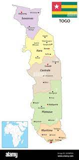
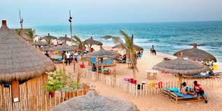
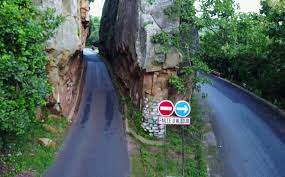
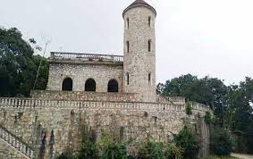

PRESENTATION DU TOGO
CARTE DU TOGO

DESCRIPTION DU TOGO
Le Togo est un pays d'Afrique de l'Ouest situé dans le golfe de Guinée. Il est connu pour ses plages bordées de palmiers et ses villages au sommet des collines. La région du Koutammakou est habitée par le peuple des Batammariba, occupant des huttes en argile traditionnelles ressemblant à des forteresses qui remontent au XVIIe siècle. La capitale Lomé est dotée d'un bazar sur plusieurs étages appelé Grand Marché ainsi que du Marché aux fétiches qui propose des remèdes et des talismans traditionnels en rapport avec le culte vaudou.
PLACES A VISITER (avec liens vers google maps)
- plages

plages
- Faille d'Alédjo
Faille d'alédjo

- Kpalimé: Chateau Vial
chateau Vial

ANECDOCTES
- Quelques années après sa prise du pouvoir, Eyadema, très jeune en ces temps, participait à un sommet des chefs d’Etat africains et européens en Belgique. On lui donna la parole. « Mes chers collègues, commença-t-il, celui qui a la diarrhée n’a pas peur de l’obscurité… » Les présidents européens, paraît-il, n’auraient rien compris de ce proverbe et auraient commencé à se regarder, ébahis. En effet, le proverbe de notre père de la nation était un peu déplacé dans ce cadre. Il avait oublié ou ignorait que les Européens n’avaient pas besoin de faire des centaines de mètres de trajet de leur maison pour aller faire leurs besoins comme cela se faisait dans son Pya natal où on devait aller se libérer dans la brousse ou sur un dépotoir, loin de sa maison. Le Blanc qui veut faire ses besoins n’a rien à voir avec l’obscurité, il allume son ampoule et va dans les toilettes, à l’intérieur de son appartement ! Pauvre papa Eyadema !
- Papa Eyadema, raconte-t-on, avait une préférence très particulière pour les bobarabas, c’est-à-dire les nanas aux derrières bien dégagés. Et quand il se retrouvait dans sa couche avec une de ces dames aux grosses fesses – souvent arrachées à ses collaborateurs -, il lui murmurait avant le début des hostilités : « Ô femme, fais-moi monter sur ta montagne de Sion, pour que je puisse voir dans la vallée, cette vallée pleine de merveilles et de surprises. Fais-moi monter sur ta montagne, pour que je puisse voir toute la beauté de Jérusalem. Car beaucoup de choses me répugnent ici-bas, et j’ai besoin de m’élever. Fais-moi donc, femme montagne, monter sur ta montagne sainte. » Belle poésie non ? De quoi décerner un prix spécial de mérite à cet ancien champion d’évala subitement devenu Baudelaire !
- Baba – surnom d’Eyadema -, selon les rumeurs, ne faisait jamais ses besoins ailleurs que dans un gros pot en plastique. Après, des domestiques, spécialement embauchés pour la circonstance, se chargeaient de fouiller minutieusement ses déchets évacués, avant de les jeter. Baba voulait toujours s’assurer s’il n’avait pas expulsé l’un des multiples gris-gris que lui avaient fait avaler ses centaines de féticheurs.